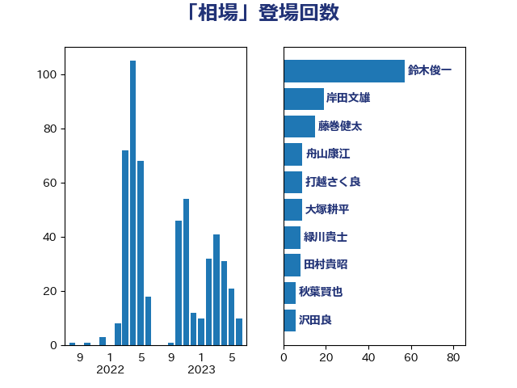

単語「相場」

| 鈴木俊一 | 自由民主党 | 57 回 |
| 岸田文雄 | 自由民主党 | 19 回 |
| 藤巻健太 | 日本維新の会 | 15 回 |
| 舟山康江 | 国民民主党 | 9 回 |
| 打越さく良 | 立憲民主党 | 9 回 |
| 大塚耕平 | 国民民主党 | 9 回 |
| 緑川貴士 | 立憲民主党 | 8 回 |
| 田村貴昭 | 日本共産党 | 8 回 |
| 秋葉賢也 | 自由民主党 | 6 回 |
| 沢田良 | 日本維新の会 | 6 回 |
| 杉久武 | 公明党 | 6 回 |
| 後藤祐一 | 立憲民主党 | 6 回 |
| 金子道仁 | 日本維新の会 | 5 回 |
| 野村哲郎 | 自由民主党 | 5 回 |
| 熊谷裕人 | 立憲民主党 | 5 回 |
| 浜田聡 | NHK党 | 5 回 |
| 勝部賢志 | 立憲民主党 | 5 回 |
| 前川清成 | 日本維新の会 | 5 回 |
| 階猛 | 立憲民主党 | 4 回 |
| 西村康稔 | 自由民主党 | 4 回 |
| 稲津久 | 公明党 | 4 回 |
| 福田昭夫 | 立憲民主党 | 4 回 |
| 林芳正 | 自由民主党 | 4 回 |
| 前原誠司 | 国民民主党 | 4 回 |
| 住吉寛紀 | 日本維新の会 | 4 回 |
| 神田潤一 | 自由民主党 | 3 回 |
| 石川香織 | 立憲民主党 | 3 回 |
| 牧山ひろえ | 立憲民主党 | 3 回 |
| 武部新 | 自由民主党 | 3 回 |
| 梅村聡 | 日本維新の会 | 3 回 |
| 東徹 | 日本維新の会 | 3 回 |
| 中村裕之 | 自由民主党 | 3 回 |
| 鬼木誠 | 立憲民主党 | 2 回 |
| 長妻昭 | 立憲民主党 | 2 回 |
| 金城泰邦 | 公明党 | 2 回 |
| 野間健 | 立憲民主党 | 2 回 |
| 紙智子 | 日本共産党 | 2 回 |
| 稲富修二 | 立憲民主党 | 2 回 |
| 田村まみ | 国民民主党 | 2 回 |
| 玉木雄一郎 | 国民民主党 | 2 回 |
| 浅田均 | 日本維新の会 | 2 回 |
| 江田憲司 | 立憲民主党 | 2 回 |
| 櫻井周 | 立憲民主党 | 2 回 |
| 森本真治 | 立憲民主党 | 2 回 |
| 柳ヶ瀬裕文 | 日本維新の会 | 2 回 |
| 杉本和巳 | 日本維新の会 | 2 回 |
| 末松義規 | 立憲民主党 | 2 回 |
| 庄子賢一 | 公明党 | 2 回 |
| 川田龍平 | 立憲民主党 | 2 回 |
| 山本博司 | 公明党 | 2 回 |
| 小野泰輔 | 日本維新の会 | 2 回 |
| 小林鷹之 | 自由民主党 | 2 回 |
| 国光あやの | 自由民主党 | 2 回 |
| 中川宏昌 | 公明党 | 2 回 |
| 音喜多駿 | 日本維新の会 | 1 回 |
| 阿部司 | 日本維新の会 | 1 回 |
| 長友慎治 | 国民民主党 | 1 回 |
| 鈴木馨祐 | 自由民主党 | 1 回 |
| 鈴木義弘 | 国民民主党 | 1 回 |
| 鈴木敦 | 国民民主党 | 1 回 |
| 野田佳彦 | 立憲民主党 | 1 回 |
| 酒井庸行 | 自由民主党 | 1 回 |
| 足立康史 | 日本維新の会 | 1 回 |
| 赤松健 | 自由民主党 | 1 回 |
| 西田昌司 | 自由民主党 | 1 回 |
| 荒井優 | 立憲民主党 | 1 回 |
| 若林健太 | 自由民主党 | 1 回 |
| 舩後靖彦 | れいわ新選組 | 1 回 |
| 羽田次郎 | 立憲民主党 | 1 回 |
| 米山隆一 | 立憲民主党 | 1 回 |
| 竹詰仁 | 国民民主党 | 1 回 |
| 秋野公造 | 公明党 | 1 回 |
| 石井章 | 日本維新の会 | 1 回 |
| 石井浩郎 | 自由民主党 | 1 回 |
| 石井正弘 | 自由民主党 | 1 回 |
| 渡辺創 | 立憲民主党 | 1 回 |
| 浅野哲 | 国民民主党 | 1 回 |
| 泉健太 | 立憲民主党 | 1 回 |
| 河野義博 | 公明党 | 1 回 |
| 河野太郎 | 自由民主党 | 1 回 |
| 池畑浩太朗 | 日本維新の会 | 1 回 |
| 横山信一 | 公明党 | 1 回 |
| 森山浩行 | 立憲民主党 | 1 回 |
| 柴愼一 | 立憲民主党 | 1 回 |
| 有村治子 | 自由民主党 | 1 回 |
| 斎藤アレックス | 国民民主党 | 1 回 |
| 掘井健智 | 日本維新の会 | 1 回 |
| 川合孝典 | 国民民主党 | 1 回 |
| 岡本三成 | 公明党 | 1 回 |
| 山際大志郎 | 自由民主党 | 1 回 |
| 山本剛正 | 日本維新の会 | 1 回 |
| 山井和則 | 立憲民主党 | 1 回 |
| 小田原潔 | 自由民主党 | 1 回 |
| 小山展弘 | 立憲民主党 | 1 回 |
| 宮崎雅夫 | 自由民主党 | 1 回 |
| 太田房江 | 自由民主党 | 1 回 |
| 大家敏志 | 自由民主党 | 1 回 |
| 堂込麻紀子 | 無所属 | 1 回 |
| 堀井巌 | 自由民主党 | 1 回 |
| 吉良よし子 | 日本共産党 | 1 回 |
| 吉田とも代 | 日本維新の会 | 1 回 |
| 北神圭朗 | 無所属 | 1 回 |
| 伊藤渉 | 公明党 | 1 回 |
| 中川正春 | 立憲民主党 | 1 回 |
| 下野六太 | 公明党 | 1 回 |
| 下条みつ | 立憲民主党 | 1 回 |
| 上田清司 | 国民民主党 | 1 回 |
| たがや亮 | れいわ新選組 | 1 回 |